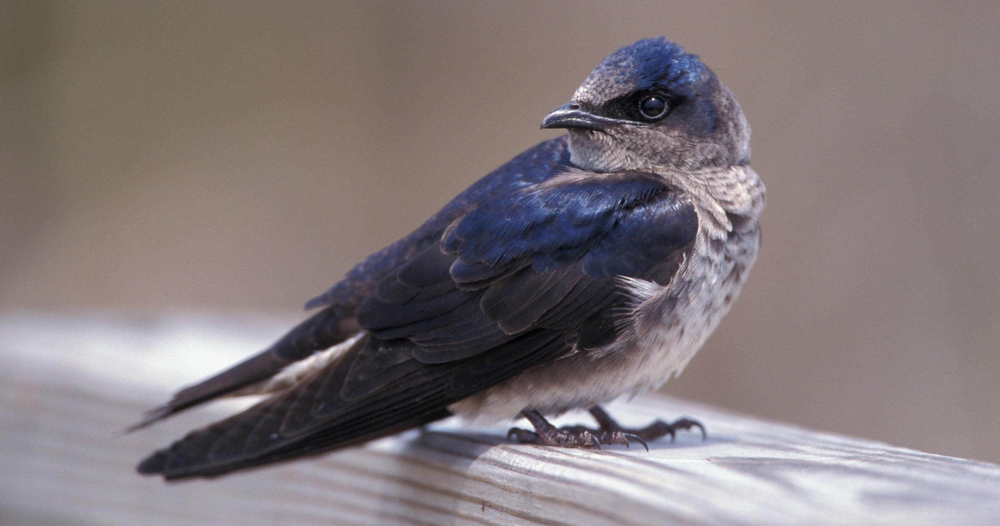

For the first project in IAT 320 Body Interface, we were asked to individually create an interactive origami with a circuit that would emulate a behaviour of an animal. As well, we had to make the interaction have multiple states.
First, I had to come up with an animal behaviour I wanted to emulate. For my interactive origami, I chose to emulate the iridescent properties of the purple martin’s feathers. Next, I created a prototype of the circuit and began coding the interaction. After a couple iterations and tweaks to the code, I ended up creating a circuit using a light sensor and a compass sensor to adjust the brightness and colour of the LEDs. The amount of light hitting the light sensor would adjust the colour of the LEDs, while the rotation of the compass sensor would adjust the brightness of the LEDs. I then began creating prototypes of the origami and settled on a feather design that allowed the LEDs to be attached to the bottom of the feather. In order to house the sensors, I created a stand out of Lego for the feather to sit on and the sensors to be attached to. Finally, I created the final circuit and put the final piece together.

On issue I ran into was that the brightness transition was not smooth while the compass sensor rotated as the sensor values were not accurate. As well, the brightness would jump between the max and min when the compass sensor every 90°. To solve this, I left the 90° issue alone as it was taking too long to solve, and scaled up the compass sensor values to make it a bit smoother.